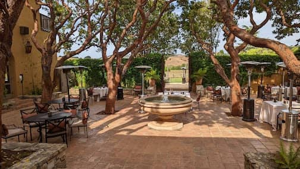
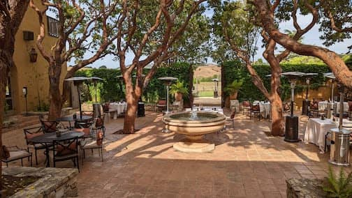

..
Carmel Valley
May 26 - 27. Carmel Valley, CA
One night getaway to Carmel Valley. Outdoor spa at Refuge was very memorable.
 Loved our lunch at The Hacienda, Santa Lucia Preserves.
May 26 - 27. Carmel Valley, CA
One night getaway to Carmel Valley. Outdoor spa at Refuge was very memorable.
 Loved our lunch at The Hacienda, Santa Lucia Preserves.